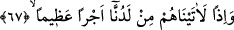
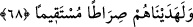

pekiştirici olurdu.
“Eğer onlara” yâni münâfıklara, İsrailoğulları günahlarından tevbe etmek
istediklerinde onlara farz kıldığımız gibi “kendinizi öldürün yâhut yurtlarınızdan çıkın
diye emretmiş” farz veya vâcip kılmış “olsaydık, içlerinden pek azı” çok azı ki onlar
ihlaslı olanlardır “müstesnâ bunu” yani emredileni “yapmazlardı. Eğer” Peygamber
(a.s)’a tâbî olmak, ona itâat edip sancağı altında yürümek, zâhiren ve bâtınen onun
uygun gördüklerine ve verdiği hükümlere boyun eğmek husûsunda “kendilerine verilen
öğüdü yerine getirselerdi, onlar için” her iki dünyâdaki âkıbetleri bakımından “hem
daha hayırlı hem de” îmanlarını “daha pekiştirici” ve îmanlarında bocalamaktan daha
uzak “olurdu.” Allah’ın emir ve yasakları, vaad ve tehdit, teşvik ve korkutma ile
berâber olduğundan âyette öğüt olarak isimlendirilmiştir.
67- O zaman elbette kendilerine nezdimizden büyük mükâfât verirdik.
Sanki “Îmanlarını pekiştirdikten sonra onlar için ne var?” diye sorulmuş ve cevap
olarak şöyle denilmiştir: Eğer îmanlarında sâbit olurlarsa “o zaman elbette kendilerine
nezdimizden katımızdan” “büyük mükâfât” âhirette bitip tükenmek bilmeyen çok sevap
“verirdik.”
68- “Ve onları dosdoğru bir yola iletirdik.”
“Ve onları” yürüdükleri takdirde kudsiyet âlemine ulaşacakları ve kendilerine gayb
kapılarının açılacağı “dosdoğru bir yola iletirdik.”
Hz. Peygamber (s.a.v) buyurmuştur: “Bildiğiyle amel edene, Allah bilmediği şeylerin
ilmini de nasip eder.”[67]
Bil ki “Kendini öldürmek” hakîkatte nefsin hayat kaynağı demek olan hevâsını yok
edip sıfatlarını ortadan kaldırmak demektir. “Yurtlardan çıkmak” ise kalplerin huzur
bulup ülfet ettiği sabır, tevekkül, rıza, teslimiyet ve benzeri makamlardan çıkmak
demektir. Çünkü bunlar tevhîde ve Allah’ın zatında fenâya (fenâ fi’z-zât) mânidirler.
Ârifin gönlü dosta talip olmuş
Hakk’ın nûru onun varlığına gâlip olmuş
Allah’ın zâtı kibriyâsının hicâbından
Garkeylemiş o ârifi, bahr-i fenâya